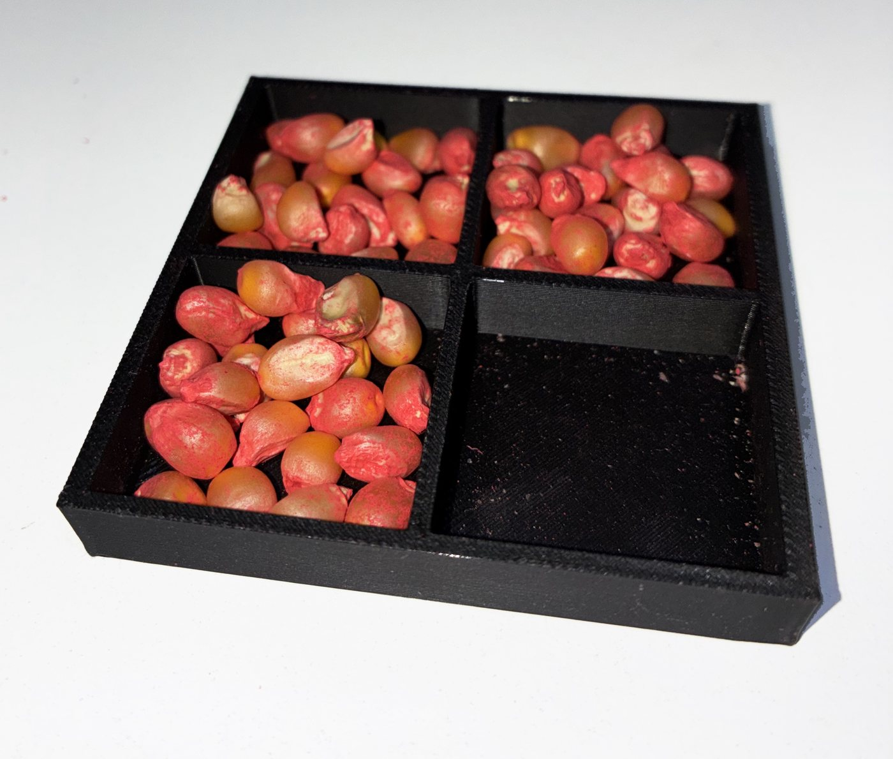
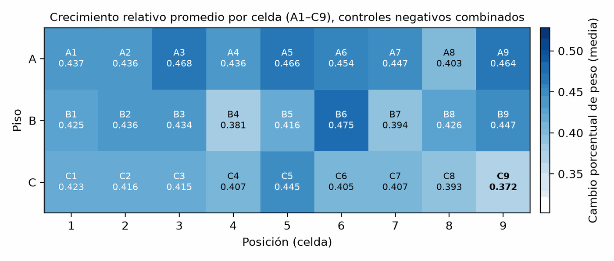
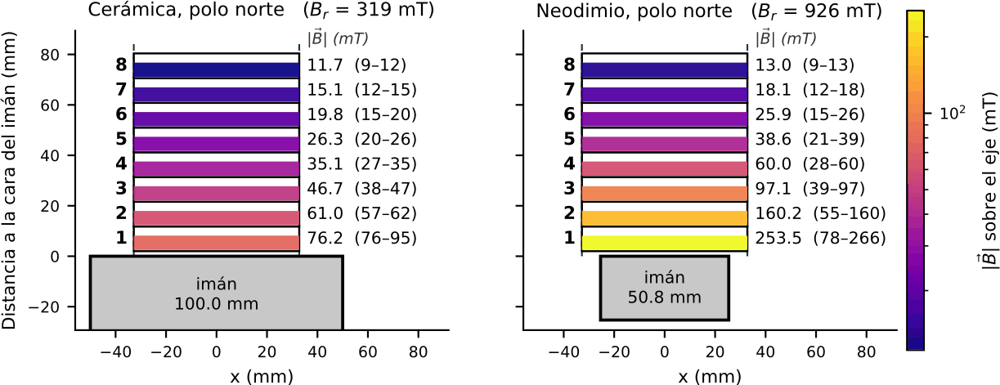

Trabajo especial de la Licenciatura en Física · Laboratorio de Magnetobiología (MBLab) · Universidad Nacional de San Luis · en curso

¿Puede un campo magnético estático cambiar cómo germina una semilla?
La magnetobiología estudia los efectos de los campos magnéticos sobre los sistemas vivos, y el magnetopriming —exponer semillas a un campo antes o durante la germinación— aparece en la literatura como un tratamiento de bajo costo y sin insumos químicos, con potencial en agricultura. El problema es que los resultados publicados son dispares: distintos laboratorios reportan efectos de distinto signo y magnitud, muchas veces sin caracterizar la variabilidad de su propio montaje.
Mi trabajo apunta ahí: no a demostrar que el efecto existe, sino a medirlo con un diseño lo suficientemente controlado como para que el resultado signifique algo, sea cual sea.
Antes de comparar un solo tratamiento, corrí tres experimentos de control negativo independientes de 72 horas cada uno, con un total de 81 bandejas. El objetivo no era medir un efecto, sino caracterizar la variabilidad espacial del propio sistema experimental: cuánto varía el resultado entre posiciones cuando no hay tratamiento.
Ese piso de ruido es lo que permite después distinguir una diferencia real de una casualidad. Recién entonces vienen los experimentos con imanes, exponiendo las semillas durante las primeras 72 horas de germinación. La variable principal de análisis es el cambio porcentual en peso húmedo, y se estiman tamaño de efecto, significancia estadística y reproducibilidad.

Buena parte del trabajo no fue medir, sino fabricar las condiciones para poder medir:
— Dispositivos de exposición impresos en 3D, diseñados en Tinkercad y build123d, para sostener las semillas en posiciones reproducibles respecto del imán.
— Caracterización de los imanes, experimental y numérica: uno de ferrita cerámica y otro de neodimio, ambos de geometría prismática rectangular.
— Un sistema de adquisición de imágenes construido específicamente para este trabajo, que estandariza la captura de las bandejas a lo largo del tiempo.
— Herramientas informáticas propias para automatizar la organización de las muestras y el análisis, incluyendo visión por computadora para medir plántulas sin hacerlo a mano.

La etapa experimental está en curso durante 2026. La tesis se defiende en la Universidad Nacional de San Luis, bajo la dirección de Leonardo Makinistián y la codirección de Daniel Guerreiro.
El documento se escribe en LaTeX y su desarrollo es público:
Se evaluó el efecto de campos magnéticos estáticos sobre la germinación y el crecimiento inicial de semillas de Zea mays. Se realizaron tres controles negativos de 72 h cada uno (n = 81 bandejas en total) para caracterizar la variabilidad espacial del sistema experimental, seguidos de experimentos con imanes cerámicos de ferrita en configuración polo norte, exponiendo a las semillas durante las primeras 72 h de germinación. La variable principal de análisis fue el cambio porcentual en peso húmedo.
El estudio buscó identificar condiciones asociadas a mejoras en variables de crecimiento temprano, priorizando un diseño experimental sistemático, controlado y cuantitativo. Se estimaron tamaño de efecto, significancia estadística y reproducibilidad de los resultados bajo condiciones controladas de germinación.
Palabras clave: magnetobiología, magnetopriming, campo magnético estático, Zea mays, germinación, mecanismo de pares de radicales.
The effect of static magnetic fields on the germination and early growth of Zea mays seeds was assessed. Three independent 72-h negative-control experiments (n = 81 trays in total) were carried out to characterise the spatial variability of the experimental setup, followed by treatment experiments using north-pole ferrite ceramic magnets, with the seeds exposed during the first 72 h of germination. The primary response variable was the percentage change in wet weight.
The study aimed to identify exposure conditions associated with improvements in early growth variables, prioritising a systematic, controlled and quantitative experimental design. Effect sizes, statistical significance and reproducibility of the results were estimated under controlled germination conditions.
Keywords: magnetobiology, magnetopriming, static magnetic field, Zea mays, germination, radical pair mechanism.